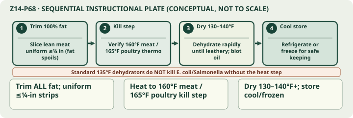

Z14-P68 · Food production and preservation · New manuscript
Pre-heat meat to safe internal temperatures before drying homemade jerky
Eliminate dangerous E. coli O157:H7 and Salmonella survival in homemade beef, venison, or poultry jerky.
When it applies · Making dried meat or poultry jerky in home electric dehydrators or ovens.
Equipment · Calibrated food thermometer, lean trimmed meat strips (uniform ≤¼ inch), marinade/heating pot or oven, and electric dehydrator holding 130–140°F+.

Actions
- Trim away ALL visible fat completely before slicing lean meat into uniform thin strips (≤¼ inch thick)—fat does NOT dry and turns rancid quickly in storage.[P11, P18]
- Follow NCHFP's mandatory pathogen-kill heating step because standard 130–140°F dehydrator air is too cool to destroy E. coli and Salmonella reliably: EITHER heat meat strips in boiling marinade/brine BEFORE drying to an internal temperature of 160°F for red meat / 165°F for poultry verified by thermometer, OR heat finished oven-baked/dehydrated strips in a 275°F oven for 10 minutes to reach 160°F/165°F internal temperature per Extension guidelines.[P11, F02]
- Dry pre-heated strips rapidly at 130–140°F+ until leathery (cracks when bent without snapping completely), blot any surface oil cleanly with paper towels, and store refrigerated or frozen for best safety/shelf life rather than assuming indefinite warm-room storage.[P11, P18]
Failure recognition · Placing raw marinated venison strips straight into a 135°F countertop dehydrator with zero 160°F heat-kill step, causing severe E. coli illness.[P11, F02]
Verify · Confirm fat trimmed clean, calibrated thermometer verified 160°F (red meat) or 165°F (poultry) kill step, and finished jerky stored cool/dry or frozen.[P11, F02]
Stop or change course · Unheated raw-dried meat jerky, tacky damp centers, or oily rancid odor must be discarded cleanly.[P11]
Evidence and editorial notes
- F02 · USDA / FDA / CDC · Four Steps to Food Safety (current web edition)
- Section: Cook > Minimum internal temperature · Conditions: Food preparation with a working food thermometer
Support: Use food-specific safe internal temperatures; visual appearance alone cannot verify cooking.
Limitations: Thermometer calibration and probe placement affect readings. · Conflicting evidence: None; retained for food safety pack completeness.
Editorial note: Maintains five-pack integrity. · Specialist reviewer: Food safety and public health
Primary source · checked 2026-11-24 - P11 · NCHFP · Drying Foods Safely (current web edition)
- Section: Drying Foods > Pretreatment, Temperature Control, Airflow, and Conditioning · Conditions: Electric dehydrators, controlled low ovens, or approved solar dryers for fruits, herbs, vegetables, and jerky
Support: Control temperature, low humidity, and continuous airflow simultaneously to remove moisture before spoilage occurs; blanch vegetables where directed, heat meat to safe internal temperatures per NCHFP jerky guidelines, and condition dried fruits to equalize residual moisture before airtight storage.
Limitations: Case-hardening (too hot early) traps wet interiors that mold in storage; open-air outdoor drying fails in humid climates like Upper Midwest summers. · Conflicting evidence: None; separates safe controlled dehydration from high-risk raw-meat drying.
Editorial note: Grounds dehydration equipment, jerky safety, and moisture-equilibrium checks. · Specialist reviewer: Food preservation and food safety specialist
Primary source · checked 2026-11-24 - P18 · University of Minnesota Extension · Harvesting and Storing Home Garden Vegetables (current web edition)
- Section: Dry Grain, Legume, and Pantry Pest/Moisture Protection · Conditions: Cool dry household pantries storing dry beans, grains, flour, and dehydrated produce
Support: Store dry staples and dehydrated foods in cool (ideally 50–70°F), dark, dry locations inside airtight food-grade containers to prevent moisture absorption, rancidity, rodents, and pantry insects; inspect periodically for clumping, webbing, or off-odors.
Limitations: Heat, humidity, and light degrade nutrients and accelerate fat rancidity in whole grains and nuts far faster than refined staples. · Conflicting evidence: None; avoids fabricated 25-year shelf-life promises.
Editorial note: Grounds dry-goods storage, pest exclusion, and spoilage inspection. · Specialist reviewer: Food storage and Extension specialist
Primary source · checked 2026-11-24
Source lineage · NCHFP Drying Jerky Safely; new manuscript · Classification · New manuscript.